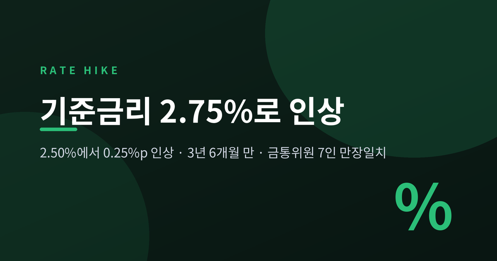
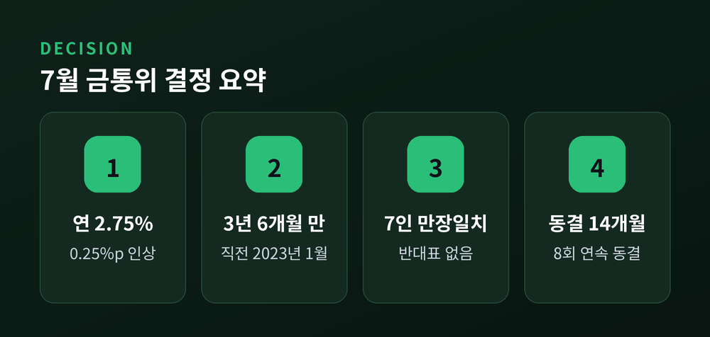
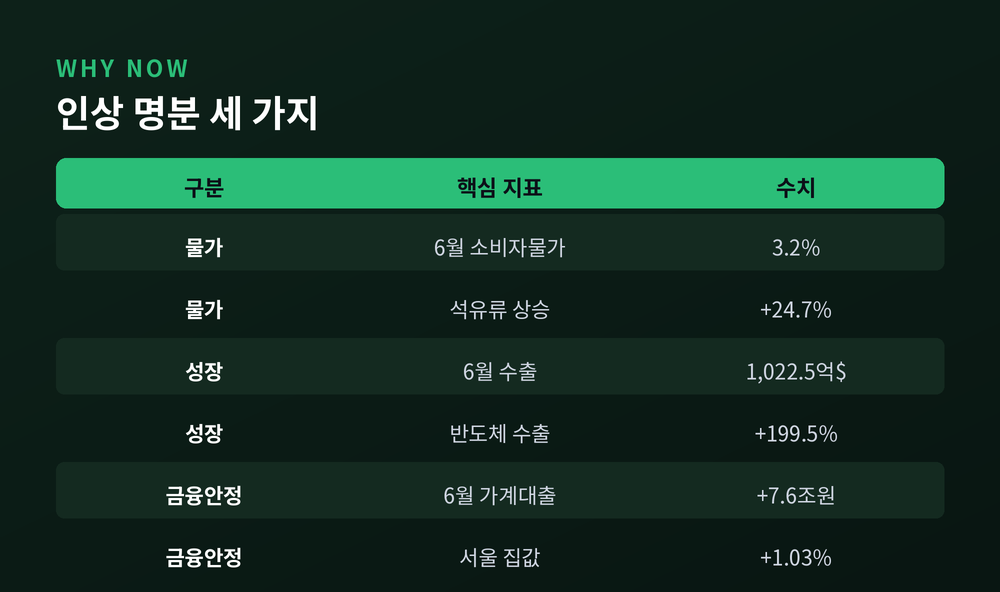
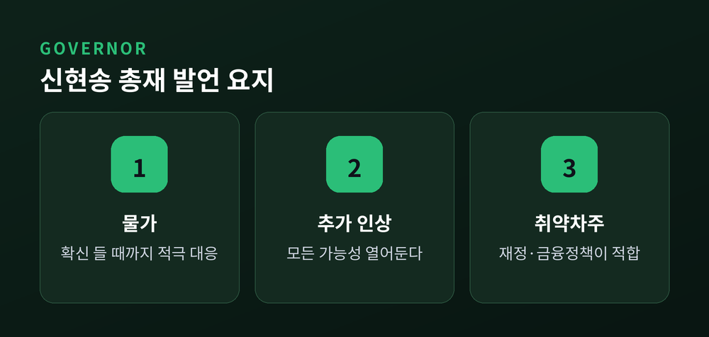
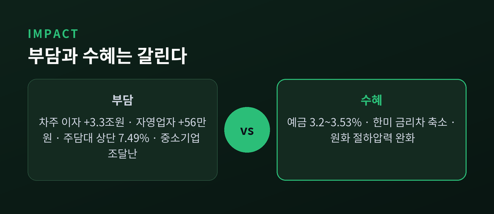
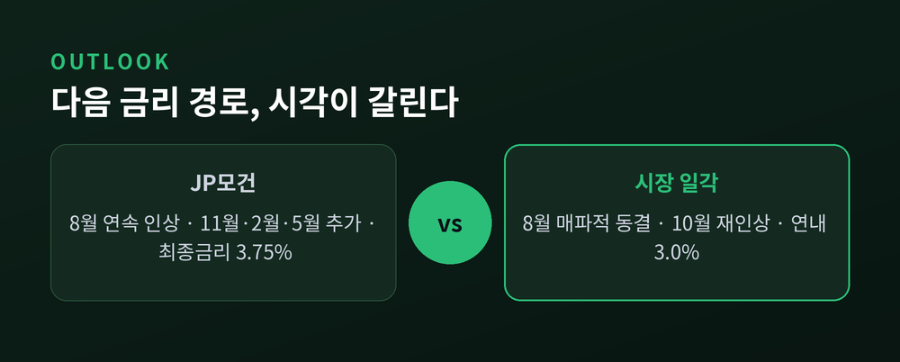

3년 6개월 만의 인상, 금통위원 7인 만장일치가 뜻하는 것

오늘 한국은행이 기준금리를 연 2.50%에서 2.75%로 올렸습니다. 3년 6개월 만의 인상이자, 14개월 동안 이어진 동결 기조의 종료입니다. 이번 글에서는 무슨 일이 있었고 왜 중요하며 앞으로 무엇이 달라지는지를 순서대로 정리하겠습니다.
2026년 7월 16일 오전, 서울 중구 한국은행 본점입니다.
금융통화위원회는 통화정책방향 결정회의를 열고 기준금리를 연 2.50%에서 연 2.75%로 0.25%포인트 올렸습니다. 신현송 총재를 포함한 금통위원 7인 전원 만장일치였습니다.
이 인상에는 두 개의 시간이 붙습니다.
하나는 3년 6개월입니다. 직전 인상은 2023년 1월, 3.25%에서 3.50%로 올렸을 때였습니다. 다른 하나는 14개월입니다. 한국은행은 2025년 5월 기준금리를 2.50%로 내린 뒤 여덟 차례 연속 동결해 왔습니다. 그 흐름이 오늘 끊겼습니다.
같은 날 금융중개지원대출 금리도 연 1.00%에서 1.25%로 함께 올랐습니다.

예전엔 "언제 더 내릴까"가 질문이었습니다. 지금은 "얼마나 더 올릴까"가 질문이 됐습니다.
기록 하나만 놓고 보면 0.25%포인트는 작은 숫자입니다. 그러나 방향이 바뀐 0.25%포인트는 크기와 무관하게 다른 의미를 갖습니다. 완화에서 긴축으로, 사이클 자체가 뒤집혔기 때문입니다.
이번 결정의 무게는 인상 폭이 아니라 통화정책방향 결정문에 실렸습니다.
한국은행은 결정문에 "앞으로도 금리 인상 기조를 이어나갈 필요가 있다"고 명시했습니다. 한 번 올리고 지켜보겠다는 뜻이 아닙니다. 인상이 이어질 것이라는 예고를 문서로 남긴 셈입니다.
물가 진단도 강경했습니다. 결정문은 "물가는 그간 높아진 비용 압력이 당분간 이어지는 가운데 수요 측 압력도 점차 높아지면서 상당 기간 목표 수준을 웃도는 오름세를 보일 것"이라고 밝혔습니다.
사실 시장은 이미 알고 있었습니다. 채권시장 참가자 10명 중 7명이 7월 인상을 점쳤습니다.
신호는 5월부터 나왔습니다. 5월 금통위는 동결로 끝났지만 장용성 위원과 유상대 부총재가 인상 소수의견을 냈습니다. 당시 신현송 총재는 기자간담회에서 "향후 논의의 대상은 금리를 언제, 얼마나 빨리, 어디까지 올릴지"라고 말했습니다. 이후 국회 업무보고에서도 적절한 시기에 인상할 필요가 있다는 입장을 밝혔습니다.
그래서 오늘의 뉴스는 인상 그 자체가 아닙니다. 예고된 전환이 실제로 집행됐다는 것, 그리고 그 전환에 반대표가 하나도 없었다는 것입니다.
한국은행이 내세운 근거는 세 갈래입니다.
첫째, 물가입니다.
6월 소비자물가는 전년 동월 대비 3.2% 올랐습니다. 두 달 연속 3%대이며, 2년 6개월 만의 최고 상승폭입니다. 주범은 석유류였습니다. 석유류가 24.7% 급등하며 전체 물가를 0.93%포인트 끌어올렸습니다.
다만 결이 다른 숫자도 있습니다. 근원물가는 2.5%로 5월과 같았습니다. 생활물가지수는 3.4%였습니다. 정부의 석유제품 최고가격제가 물가를 0.4%포인트 낮췄고, 이 조치가 없었다면 6월 물가는 3.6%였을 것으로 추정됩니다.
둘째, 성장입니다.
6월 수출은 1,022억 5,000만 달러였습니다. 전년 동월 대비 70.9% 증가하며 월간 기준 사상 처음 1,000억 달러를 넘겼습니다. 독일·중국·미국에 이어 세계 네 번째 기록입니다.
동력은 반도체였습니다. 6월 반도체 수출은 448억 2,000만 달러로 전년 대비 199.5% 늘었습니다. 상반기 반도체 수출 1,924억 달러는 2025년 연간 실적 1,734억 달러를 이미 넘어섰습니다.
경기가 나쁘면 금리를 올리기 어렵습니다. 지금은 그 부담이 덜합니다.
셋째, 금융안정입니다.
6월 말 은행권 가계대출 잔액은 한 달 새 7조 6,000억원 늘었습니다. 2024년 8월 이후 1년 10개월 만의 최대 증가 폭입니다. 서울 주택종합 평균 매매가격은 전월 대비 1.03% 올라 올해 최고 상승률을 기록했습니다. 달러/원 환율은 최근 1,500원 아래로 내려왔지만 여전히 높은 수준입니다.

취임 석 달 만에 긴축의 칼을 뽑은 총재의 발언은 결정문보다 구체적이었습니다.
물가에 대해서는 이렇게 말했습니다. "물가상승률이 목표 수준까지 안정적으로 수렴한다는 확신이 들 때까지 적극 대응하겠다."
다만 추가 인상 시점은 못 박지 않았습니다. "통화정책 경로가 사전에 결정해서 움직이는 것이 아니다"라며 "모든 가능성을 열어두고 정책을 펴겠다"고 했습니다. 그러면서 볼 지표를 직접 지목했습니다. 다음 주 발표될 2분기 국민소득 통계, 8월 초 나올 7월 소비자물가, 환율, 부동산 중심의 가계대출입니다.
인상 실기론에는 "데이터가 충분하지 않았다"고 반박했습니다.
주가 하락 우려에는 선을 그었습니다. "전혀 동의하지 않는다. 다른 변수가 오히려 많다. 반도체 가격 영향이 더 클 것"이라고 했습니다.
취약차주 문제에 대한 답은 솔직했습니다. "통화정책보다는 재정·금융정책으로 대응하는 것이 적합하다"며 채무조정 등 취약차주의 어려움을 덜 수 있는 정책이 필요하다고 말했습니다. 금리로 모든 것을 해결할 수는 없다는 인정입니다.
집값에 대해서도 마찬가지였습니다. 통화정책으로 집값을 잡는 것은 무리라고 하면서도, 거시건전성 정책과 통화정책은 상호보완적 효과가 있다고 덧붙였습니다.

금리는 공평하지 않습니다. 같은 0.25%포인트가 누군가에게는 청구서로, 누군가에게는 이자 수입으로 도착합니다.
빚이 있는 쪽입니다.
한국은행 추산에 따르면 대출금리가 0.25%포인트 오르면 주택담보대출 차주의 연간 이자 부담이 1조 8,000억원, 신용대출과 마이너스통장 등 기타 대출 이자가 1조 5,000억원 늘어납니다. 합치면 약 3조 3,000억원입니다.
여기서 멈춘다는 보장은 없습니다. 같은 추산으로 대출금리가 0.50%포인트 오르면 3조 7,000억원, 0.75%포인트면 5조 5,000억원으로 불어납니다.
자영업자는 기준금리가 0.25%포인트 오를 때 1인당 연간 약 56만원을 더 냅니다.
시장금리는 이미 움직였습니다. 6월 신규취급액 기준 코픽스는 3.05%로, 3월 2.81%에서 석 달 만에 0.24%포인트 올랐습니다. 은행들의 우대금리 축소까지 겹쳤습니다. KB국민은행과 NH농협은행이 6월에 주택담보대출 우대금리를 각각 0.2%포인트 줄였고, 우리은행은 7월 1일부터 '우리아파트론' 5년형 금리를 1.10%포인트 올렸습니다. 5대 시중은행 주담대 고정형(5년) 금리는 현재 연 4.77~7.49%입니다. 연내 상단이 8%대에 진입할 수 있다는 관측이 나옵니다.
돈을 맡긴 쪽입니다.
반대편 계산서는 다릅니다. 신한은행은 7월 13일 'SOL메이트 정기예금' 1년 만기 금리를 연 3.2%로 0.2%포인트 올렸습니다. SC제일은행은 8일부터 'e-그린세이브예금' 12개월 기본금리를 3.45%로 조정했습니다. 카카오뱅크는 3일부터 정기예금·자유적금 기본금리를 최대 0.2%포인트, 케이뱅크는 4일부터 코드K 정기예금을 최대 0.1%포인트 인상했습니다.
기업입니다.
대기업은 회사채로 숨 쉴 구멍이 있습니다. 중소기업은 사정이 다릅니다. 자금 조달 경로가 제한적이고 대출 상당수가 변동금리라 충격을 그대로 받습니다. 하반기 회사채 만기도 몰려 있습니다. 9월 8조 4,225억원, 10월 7조 185억원, 7월 6조 4,760억원 규모입니다. 차환 수요가 몰리는 시점에 조달 환경이 나빠지는 구조입니다.
부동산과 환율입니다.
부동산은 지역별로 갈릴 전망입니다. 대출 의존도가 높은 서울 외곽과 수도권 중저가 지역부터 매수세가 둔화될 것으로 관측됩니다. 반면 강남·서초·송파와 성동·용산 등 핵심지는 상대적으로 가격 방어력이 높을 것으로 예상됩니다.
환율에는 도움이 될 수 있습니다. 한미 금리차가 좁혀지면 원화 절하 압력이 일부 해소되기 때문입니다.

앞으로의 경로를 두고 시각이 나뉩니다.
JP모건은 이번 인상을 완화에서 긴축으로의 사이클 전환이 공식화된 것으로 평가했습니다. 당초 7월·10월·내년 1월·4월의 분기별 인상을 예상했지만, 8월 인상 전망을 새로 추가했습니다. 8월·11월·내년 2월·5월 인상을 거쳐 내년 2분기 말 최종금리를 3.75%로 제시했습니다.
반면 8월에는 매파적 동결로 한 박자 쉬고 10월에 다시 올려 연내 3.0%에 도달한다는 전망도 만만치 않습니다.
한국은행은 어느 쪽에도 손을 들지 않았습니다. 신 총재는 어느 한쪽으로 단언할 수 없다고 했습니다. 결국 다음 주 2분기 국민소득 통계와 8월 초 7월 물가가 답을 대신할 것입니다. 추가 인상을 가르는 분기점으로는 '3% 성장률'이 지목됩니다.

한계도 분명히 해두겠습니다. 위 전망은 모두 예측입니다. 8월 금통위의 결정도, 연말 금리 수준도, 주담대 금리가 실제 8%에 닿을 시점도 아직 확정된 사실이 아닙니다.
거창한 대응책은 없습니다. 다만 은행권의 조언 하나는 새겨둘 만합니다.
기준금리 인상 가능성이 이미 시장금리에 상당 부분 반영돼 단기간 큰 변화는 없겠지만, 금리 재산정 시점이 돌아오는 변동금리 차주들은 이자 부담이 늘 수 있으니 상환 계획을 점검할 필요가 있다는 것입니다.
변동금리를 쓰고 계신다면 다음 금리 재산정일이 언제인지 확인해 보시길 권합니다. 그 날짜가 앞으로 몇 달간의 가계부를 좌우합니다.
투자 유의 안내
이 글은 공개된 언론 보도와 공식 발표 자료를 정리한 정보 제공용 글이며, 투자 권유가 아닙니다. 특정 금융상품의 매수·매도를 권하지 않으며, 투자 판단과 그 결과에 대한 책임은 투자자 본인에게 있습니다. 금리·환율·부동산 전망은 예측이므로 실제와 다를 수 있습니다. 구체적인 자금 계획은 금융회사나 전문가와 상담하시기 바랍니다.
정리하면 이렇습니다.
한국은행은 오늘 0.25%포인트를 올렸습니다. 숫자는 작지만 방향은 뒤집혔습니다. 물가가 두 달 연속 3%대를 넘었고, 수출은 사상 처음 1,000억 달러를 찍었고, 가계대출과 집값은 다시 꿈틀거렸습니다. 세 가지가 한자리에 모이자 만장일치가 나왔습니다.
그러나 그 대가는 고르게 나뉘지 않습니다. 물가를 잡는 비용은 빚을 진 사람이 먼저 치릅니다. 신 총재가 취약차주 이야기에서 통화정책의 한계를 인정한 것도 그 때문일 것입니다.
— 오늘의 0.25%포인트는 종착점이 아니라 출발선입니다.
이것으로 끝이겠냐고 물으신다면, 저는 이렇게 답하겠습니다. 그 답은 다음 주 성장률과 8월 초 물가에 이미 적혀 있을 것입니다.